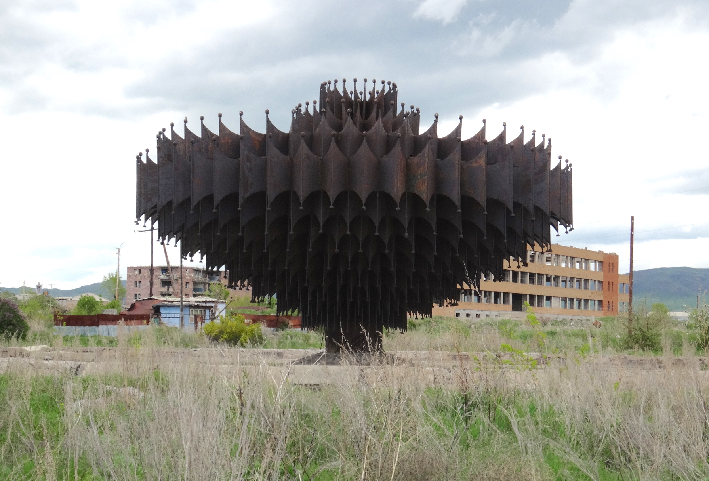

This page demonstrates some very basic HTML for use in the intro lab of GEOG N80 at Berkeley Geography, as taught in Summer 2017.
This page was written by Eve McGlynn, who arrived at Berkeley in summer 2016.
Eve just got back from Armenia, where she was studying an old earthquake. Here is a map of the shaking.
Mostly she wandered around neighborhoods like this one, which looks worse than it is.
Sometimes she found cool stuff like this old fountain.
